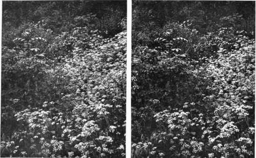
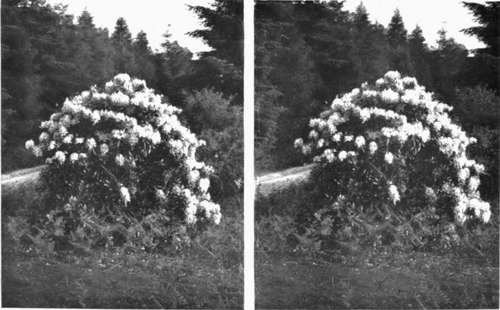

Chapter IX. How To Observe And Photograph Some Of Our Commoner Birds And Their Nests And Eggs. Part 6
Description
This section is from the book "Nature Photography For Beginners", by E. J. Bedford. Also available from Amazon: Nature Photography for Beginners.
Chapter IX. How To Observe And Photograph Some Of Our Commoner Birds And Their Nests And Eggs. Part 6
Good afternoon; so you are ready for your second excursion. Although we have had several heavy April showers during the morning, the weather has become a little more settled since mid-day, and I don't think we are likely to have any more rain, except perhaps a slight occasional shower. I am glad to see you have put on some good thick boots and leggings, as we shall find the undergrowth rather wet after the morning showers. But with the warm air it will soon dry up if we get no more rain. I keep an extra thick pair of boots for these country rambles and prepare them by rubbing a preparation of oil well in. This helps to keep the wet out and the feet dry. I am glad to hear the plates exposed last week have turned out successfully. Thanks for the print of the Primroses, which has made a very pretty picture, and later on you will be able to make an effective lantern slide from this negative. The other prints I will look at more carefully in the train, as we shall have twenty minutes to spare.
Here we are; look at the Rookery yonder in the trees round the church. The birds are very busy now and I expect most of the nests contain eggs. When you wish to obtain a photograph of their nests you had better do so from terra firrna, using a long focus lens, as trying to obtain one from the trees is not only a difficult but a dangerous task. Rooks are most interesting birds, as you may easily find out for yourself by watching them. On one occasion which came under my notice, a gale had blown down several nests from the trees where they had been built. One nest, however, remained, and the other birds set about rebuilding their nests underneath this one that had stood firm. There were five nests one above the other, and I was able to obtain a photograph of it. I called it " Rook-building up-to-date, in flats! " The five nests in the tree looked, from a distance, just like the figure of a man.
The weather looks better now than it did when we left the town, and we will go to the wood first to-day, because there is a field on the other side of it where the Lapwing nests, and if we are fortunate we may find a clutch of eggs. It is getting late for them, but the first clutches are often taken for the market, as the eggs are considered table delicacies and the early ones fetch big prices. They are known as " Plover's eggs." As we go through the wood let us look at the two nests we found last week. Do you think you can show me where the Pheasant's nest was? Ah! I see you did not note the place carefully enough. It was not here, but about twenty yards further on. I remember it was about half way between the Chaffinch's nest in the hawthorn bush, which stood well out from the other trees, and the old stump with the Primroses round it. Here is the old stump, but the Primroses have lost a good deal of their freshness and would not make such a good picture to-day. I also noted down.there was a birch tree nearly opposite where the nest was and that there was not another one for some distance, so that it could not be mistaken. There is the birch tree just ahead. You must remember things look very different if approached from different directions. Last time we were walking the other way and you do not recognise the place so well. The best plan is to make careful notes in your pocket book of several different points to help in identifying the site when a nest is discovered which you want to find again, or you will often have great difficulty in finding it the second time. Nests, as a rule, are not exposed so openly that they can be found without some amount of searching for, and you must also remember at this time of year the foliage will grow considerably in the space of a week, under the influence of the warm sunshine and showers. Look at the hawthorn bush, beyond, it is now quite green and you cannot see through it like you could last week. If the Chaffinch's nest is still there it is much less likely to be discovered now.
Fig. 46. By the Wayside (Wild Carrot).
Fig. 47. Rhododendron.
Here is the place where the Pheasant's nest was. I have had a careful search, but cannot find anything of the eggs. I can see where the nest was and am sure this is the right spot. Possibly they may have been carried away by the keeper to put under a hen, or the Stoat we saw last week may know what has become of them. Anyhow, we must try and find another nest and will come back to the wood presently. The Chaffinch's nest is all right; the bird is on. Look at her little head and tail just showing above the edge of the nest. Ah! you were not careful enough, and she has flown off. How many eggs are there? Three; well there will be one or two more probably before the clutch is complete. The nest is rather high up and would be difficult to photograph unless we could lengthen our tripod. However, as we are pretty certain to find one in a better position for our purpose, we will leave this, and perhaps may be able to obtain a photograph of the young birds later on if they hatch out successfully.
Continue to:
- prev: Birds And Their Nests And Eggs. Part 5
- Table of Contents
- next: Birds And Their Nests And Eggs. Part 7
Tags
nature, photography, art, birds, camera